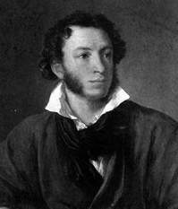

Наближається 200-річя з дня народження генія світової культури О.С.Пушкіна і 210-річя Миколаєва. Але мало хто знає, що ці дві події в історії нашого краю пов’язані з історією кохання засновника Миколаєва Г.А.Потемкина і О.С.Пушкіна до двох жінок з однаковим ім’ям – Софія Потоцька – до матері і її дочки, характери і долі яких настільки сильно відрізнялися, наскільки вони були близькі один до одного в родинних стосунках. Про історію кохання до цих двох чудових жінок моя розповідь. Дві історії про кохання.
ПЕРША ІСТОРІЯ
Заснування Миколаєва і любов Потьомкіна.

{kind=link}
{kind=link}
Г.О. Потьомкін (1739-1791) С.К. Потоцька (1760-1822)
Подобається нам чи ні, але доля кожного міста якимось дивним чином є продовженням характерів і доль їх засновників. Не буду говорити «за Одесу», засновником якої був іспанець Дерібас, скажу про наше місто. Сучасники Пушкіна залишили нам свої спогади про те, що Миколаїв своїм народженням зобов’язаний любові Потьомкіна до Софії Потоцької (тоді – Софії Вітт). Ось, наприклад, що писав в 1818 році Н.Левицький в «Українському віснику» після відвідин нашого міста :
«Чи знаєте ви історію Миколаєва? «Він побудований за наказом Князя Потьомкіна», – скажете ви, і ви помилилися. Гр.В * (Вітт – А.З.) є причиною того, що народилася і зросла, зросла і розпустилася ця квітка серед здичавілої природи. Жінка чарівна з найгарнішою ще душею, з чутливим серцем, з тонким розумом, словом, жінка-Геній вміла привернути серце Генія-героя. Одне її слово, і на диких берегах Інгулу з’явилося місто, на місці бідних рибальських хатин величезні палати Спаськ і Богоявленськ (нині Яхт-клуб і Корабельний район – А.З.); одне її слово, і чарівна рука мистецтва одягла голі скелі і піщані пагорби скромними гайками і чудовими садами, дбайливо провела світлі джерела; вони гралися, стрибали і, розтрощувалися на камінцях, дзюрчанням своїм одухотворяли мертву пустелю».
Ким же була Софія Костянтинівна Потоцька? Відразу скажу, що документальних відомостей про її походження не збереглося і існує три версії про те, як вона опинилася в Росії. Але всі вони сходяться на тому, що її, 12-річну дівчинку, купив в Константинополі в 1778 році у її матері польський або французький посол і що вона жила там в передмісті Фанарі, чому її і називали прекрасною фанаріоткою. Так називалися нащадки знатних грецьких прізвищ, які уникли розправи при завоюванні турками Константинополю. Але польський посол (мені здається це більш правдоподібним) не довіз її до Польщі. По дорозі син Кам’янець-Подільського коменданта майор Йосип Вітт перекупив Софію де Челіче, Глявоне або Маврокордато, так вона сама називала себе, за 1000 червінців і одружився з нею.
У 1779 році вони поїхали в Париж. Кажуть, що кілька років прекрасна фанаріотка, яка мала природній розум, блищала там на балах і багатьом запаморочила голову, в тому числі й королю. У 1785 році помирає батько Вітта, і синові довелося повернутися в Польщу зайняти пост батька, і тут Софія Вітт підкорила вже весь польський світ. Звістка про небувалу красу і розум Софії Вітт дійшла до Потьомкіна, і той запросив Йосипа Вітта до себе на службу. Незабаром він надав Вітту генеральський чин, графський титул Російської імперії і призначив його комендантом Херсону, натомість з винятковим правом мати повсюди супутницею його дружину.
При відвідуванні Криму Катериною II Потьомкін хизувався Софією, як найбільшим своїм завоюванням. В його архіві збереглися листи, в яких він після взяття Очакова на день Святого Миколая (зимового) замовляв розкішні сукні для неї. У «Записках Олександра Михайловича Тургенєва» повідомляється, що під час облоги Очакова, «коли військо вмирало від холоду, голоду і життя в землянках, князь Потьомкін в головній квартирі своєї, в таборі, давав бали, бенкети, палив феєрверки.., в Константинополі, потім польської служби генерала графа Вітта дружиною, потім купленої у Вітта дружини собі графом Потоцьким і, нарешті, вона бачила біля ніг своїх шанувальниками міністрів і королів; будучи вже в похилих літах, графиня Софія Потоцька була предметом уваги навіть Олександра Павловича».
Вдалося знайти мені в архівах і докладні записки Василя Степановича Попова, правителя канцелярії і довіреної особи Потьомкіна, який писав: «Він мав у себе повну крапель музики, виписував танцюристів з Франції, мав власний театр, який переїжджав за ним в усі місця, мав за дорогу ціну віртуозів різного роду, співачок, шахраїв, кумедних дурнів і навіть хор розкольників, котрий співав старовинний стовповий спів, коли йому було завгодно… Потьомкін знав кілька мов, любив літературу: він і перед стінами Очакова переклав з італійської один том церковної історії абата Фієрі і написав кілька жартівливих віршів».
Потьомкін дуже добре розумів роль особистості в історії і розпікав будівельника Миколаєва М.Л. Фалєєва за невиконання його доручень щодо солдат, кажучи, що все одно його невиконання припишуть в майбутньому Потьомкіну. Попов пише, що князь, по натурі будучи суперечливим людиною, «… обіцянки свої виконував, ніколи нічого не забував. Він читав багато навіть під час військових дій, звертався до наймайстерніших людей у всіх науках і мистецтвах, і ніхто краще за нього не мав знань. Він дивував собою імператора, художника, богослова. Він мав безліч чеснот і не менше вад».
Від себе додам, що він був бездарним полководцем, але зате одягнув армію в найзручнішу форму, і коли він не втручався в справи О.В. Суворова, то перемоги здобували досить швидко. Потьомкін справді хотів зробити Миколаїв столицею всього Новоросійського краю, в одному з архівів я знайшов проект карти з новим перейменуванням, датовану 1791 роком. Він запросив сюди кращих майстрів для будівництва і прикраси нашого міста, і це теж було даниною любові до Софії Потоцької.
Ось що писала французька портретистка Віже-Лебрен, яка відвідала табір Потьомкіна: «Йому все було байдуже, аби задовольнити бажання, капризу коханої жінки. Закоханий у пані де Вітт, він роздавав перед нею найвишуканіші люб’язності. Так, одного разу, бажаючи подарувати їй кашемірову шаль шалено високої ціни, він дав свято, на якому було до двохсот дам, а після обіду влаштував лотерею, але так, що кожної дісталося по шалі, а найкраща з шалів випала на долю найпрекраснішої з дам».
Але планам Потьомкіна не судилося збутися. До 1790 році загострилися відносини між ним і Катериною II, яку все більше і більше хвилювало те, що у Потьомкіна зосередилося занадто багато влади. Він ставав все більш некерованим. Князь практично залишив її як коханець, і їй довелося шукати нового фаворита (ним став П.О. Зубов). Потьомкін мав кличку від запорізьких козаків, як Грицько Нечоса. Через те, що вони були кращими воїнами, відмовився розганяти Запорізьку Січ, і цариці довелося давати команду генералу Теккелею. Частину запорожців, що не пішла за Дунай, він прийняв на службу (Бузьке козацтво) і дав їм кращі землі між Дністром і Південним Бугом.
Щоправда, після його смерті імператриця «виправила його діяння» і послала всіх козаків на Кубань і Тамань. Її лякав грандіозний «грецький проект» Потьомкіна по відновленню на території позбавлений влади Туреччини візантійського царства з імператором з дому Романових і можливого повернення Софії Вітт на батьківщину. Для цього Потьомкін почав будувати 300 малих суден в Миколаєві і Херсоні. З великими труднощами імператриці вдалося «умовити» Потьомкіна укласти мир з турками. Крім того, вона була вже стара і боялася за долю престолу, в разі, якби Потьомкін її пережив.
В архіві мені вдалося знайти свідчення одного з придворних про те, що Катерина II дала вказівки молодому доктору, якого тільки що вивчила в Європі й якого вона направила до князя, отруїти його, що, можливо, і було виконано 5 жовтня 1791 року. Імператриця пережила Потьомкіна всього лише на 5 років. Як же далі склалася доля Софії Вітт?
Виконуючи таємні доручення Потьомкіна і Катерини II, вона їздила на сейм до Варшави в 1788 році і переконала магната і коронного гетьмана, графа Фелікса-Станіслава Потоцького примкнути до Тарговицької конфедерації, після чого було повстання Костюшка – і Потоцький залишив батьківщину. Від любові до неї Потоцький втратив не тільки батьківщину, а й голову. Його можна зрозуміти, дивлячись на пастельний портрет Софії Потоцької роботи італійського майстра Сальваторе Тончі 1796 року. Після багаторічного торгу Потоцький викупив її за два мільйони польських злотих у Вітта, але до смерті своєї дружини Жозефіни-Амалії Мнішек-Потоцької, відомої художниці італійської школи, в 1798 році він так і не міг з нею обвінчатися.
Поселившись в Умані, він створив для неї розкішний парк, названий Софіївським, який і сьогодні радує його відвідувачів. Але подруга життя виявилася йому невірна, зв’язалася з пасинком Юрієм Потоцьким, він застав їх в любовних утіхах, не зміг цього перенести. У 1805 році старий граф помер, не попрощавшись з дружиною. Вакханалія тривала ще чотири роки, поки пасинок не програв майже весь свій статок, і вперше чарівна красуня виявилася кинутою. Вона розлучилася з Юрієм, забезпечивши йому розкішне існування в Парижі, де він незабаром і помер. «Баядерка від народження», вона на старість стає доброчесною «матроною», намагається забути колишнє життя, зберігаючи віддану пам’ять тільки до Потьомкіна, якого до кінця «шкодувала, як рідного брата». І було від чого, саме Потьомкін подарував їй велике грецьке селище Масандра, маєтки в Сімеїзі, Місхорі і дачу поблизу Сімферополю. З 1810 року Софія Потоцька «морально гарнішає», займаючись спокутою гріхів і вихованням дітей.
ДРУГА ІСТОРІЯ
Фонтан сліз і таємна любов Пушкіна
|  |  |
 |
{kind=link}
Відомо, що любов до жінки для Пушкіна була цілющим джерелом його натхнення і творчості. Він любив дуже багатьох жінок і якось, напередодні одруження, очевидно, підбиваючи підсумок любовним захопленням, взимку 1829-1830 року, будучи в гостях у московських сестер Катерини і Єлизавети Ушакових, накидав їм в альбом два списки жінок, яких любив. Список згодом отримав назву Дон-Жуанского.
Перший був списком серйозних захоплень, його закінчувала майбутня дружина Наталя, а другий – менш серйозних. Так ось, уже в першому списку поет ввів інтригу тим, що четверту позицію позначив NN. А дещо раніше в чорновій присвяті до поеми «Полтава» поет записав: «Иль посвящение поета, Как утаённая любовь, Перед тобою без привета Пройдет непризнанною вновь?» В останньому варіанті читаємо: «Как некогда его любовь» – замість «утаённой любви». Кого тільки не готували на місце NN!
Нещодавно була перевидана рідкісна до того книга П. Губера «Дон-Жуанській список О.С.Пушкіна», в якому перераховано кілька претенденток на таємничу любов. Взагалі ж називалося 8 претенденток: Марія Аркадіївна Голіцина, внучка генералісимуса О.В. Суворова, графиня Наталія Вікторівна Кочубей, в заміжжі Строганова, 4 дочки прославленого у війні 1812 року генерала М.М. Раєвського – Катерина, Олена, Марія (Волконська), Софія – і дружина історика Катерина Андріївна Карамзіна. Але жодна з них, як мені здавалося, не підходила на цю роль.
Нарешті, переглядаючи том 3 видання Пушкінського Будинку (ІРЛІ АН СРСР) «Пушкін. Дослідження і матеріали», я знайшов статтю Л.П. Гроссмана «Щодо витоків «Бахчисарайського фонтану». Вона мене вразила дивним попаданням в точку, тут вперше досить обґрунтовано була названа Софія Станіславівна Потоцька. Залишалося незрозумілим, як автор вийшов на цю стежку. В одну з поїздок до Санкт-Петербургу, отримавши спеціальний дозвіл на ознайомлення з оригіналом рукопису «Дон-Жуанського списку» (всі рукописи Пушкіна зберігаються в Пушкінському Домі), озброївшись лупою, я з подивом прочитав поруч з NN ледь помітну запис французькою мовою, зроблену тонким олівцем, – Потоцька!
Ось тепер все стало ясним – ну хіба могли зацікавлені сестри Ушакови не випитати у поступливого Пушкіна його таємницю і тут же для себе її записати? Не знаю, може бути, Л.П. Гроссман і не знав цього і просто пророче в своїй фундаментальній праці відштовхувався від того, що Пушкін сам назвав ім’я натхненниці поеми «Бахчисарайський фонтан». У листі П.А. Вяземскому 4 листопада 1823 року з Одеси поет писав: «Ось тобі, милий і поважний Асмодей, остання моя поема… Якщо ці нескладні уривки здадуться гідними тиснення, то надрукуй їх… Припиши до «Бахчисараю» маленьку передмову або післямову – якщо не для мене, то для Софії Кисельової (до заміжжя – Потоцької – А.З.)».
{kind=link}

Пізніше, 20 грудня 1823 року, він знову пише В’яземському: «Ти, здається, збираєшся зробити заочний опис «Бахчисараю»? Кинь це. Мадригали Софії Потоцької – це інша справа». Нарешті, при публікації поеми Пушкін непомітно назвав свою музу, надрукувавши в додатку «Виписку з подорожі по Тавриді» І.М. Муравьёва-Апостола, яка закінчувалася зазначенням на «прийняте і справедливу думку про те, що краса жіноча є, так би мовити, приналежністю роду Потоцьких». Сенатор і член Російської академії І.М. Муравьёв-Апостол «безсумнівно» знав статс-даму С.К. Потоцку і її двох красунь дочок, Софію та Ольгу, що блищали в 1817-1819 роках на балах Петербурга і Царського Села. Пушкін в цей час закінчував ліцей у Царському Селі, там він і познайомився з сестрами Потоцькими. Якщо вірити «Дон-Жуанському списку», то четверте любовне захоплення Пушкіна виявилося найсильнішим і найтривалішим саме через недосяжність предмета почуттів. Як тут не згадати слова Гете: «Прагнення до істини прекрасніше володіння нею».
В одному з перших віршів «Платонізм», присвячених Софії Потоцкої, поет пише:
Восторги нежные к тебе Нашли пустынную дорогу. Я понял слабый жар очей, Я понял взор полузакрытый, И побледневшие ланиты, И томность поступи твоей... Твой бог не полною наградой Своих поклонников дарит. Его таинственной наградой Младая скромность дорожит. Он любит сны воображенья, Он терпит на дверях замок, Он друг стыдливый наслажденья, Он брат любви, но одинок.
И на заключення він вигукнув: «Ужель мольба моя напрасна?» І поряд, з відчаю, дорікає її: «Не вечно будешь ты прекрасна, Не для себя прекрасна ты».
Недосяжність Софії притягувала поета до неї з дедалі більшою силою. Ймовірно, ще в Петербурзі поет дізнався, що зиму Софія і Ольга будуть коротати в Тульчині та Умані, а на літо поїдуть до Кримської Массандри. Саме в Петербурзі поет обговорював з Миколою Миколайовичем Раєвським-молодшим ідею поїздки з сімейством його прославленого батька до Криму.
Реалізацію його мрії наблизила вигнання на південь в травні 1820 р. В середині травня Пушкін приїжджає до Катеринослава (нині Дніпро), після купання у Дніпрі, захворює лихоманкою (застуда). Саме в день народження поета, 26 травня 1820 року (за старим стилем), пізно ввечері хворого Пушкіна відвідують М.М. Раєвський-старший з сином Миколою й лікарем Е.П. Рудиковськім і забирають з собою для поїздки по Кавказу й Криму. Це було справжнім порятунком, і тільки від цього можна було одужати. Пізніше, під час південного заслання, в кожен свій день народження поет прагнув зустрітися з Раєвськими.
Опустимо деталі цієї цікавої подорожі і торкнемося кульмінаційного моменту, коли кавалькада карет з сімейством Раєвських, приїхавши до Феодосії, вирішила плисти на миколаївському бригу «Мінгрелії» до Гурзуфу. Про подробиці цієї дивовижної поїздки, які мені вдалося з’ясувати (поїздка відбулася в ніч з 15 на 16 серпня, капітаном брига був тоді капітан-лейтенант М.М.Станюковіч, батько відомого письменника-мариніста, встановлено і прізвища офіцерського складу брига, модель брига вперше виконана Г.Г. Кузнецовим і знаходиться сьогодні в Музеї суднобудування і флоту), я вже писав в замітці «Шуми, шуми, слухняне вітрило…» (Південна правда, 21 жовтня 1989 р.). Тут же відзначимо, що поет вперше в своєму житті ступив на борт військового корабля, що залишалася всього одна ніч до здійснення його заповітної мрії, й тому він всю ніч не спав і бурмотів рядки натхнення елегії «Згасло денне світило», пронизане близьким побаченням з коханою та підбиттям підсумку своїх любовних почуттів:
Я вижу берег отдалённый, Земли полуденной волшебные края; С волненьем и тоской туда стремлюся я, Воспоминаньем упоённый... И чувствую: в очах родились слёзы вновь; Душа кипит и замирает; Мечта знакомая вокруг меня летает; Я вспомнил прежних лет безумную любовь, И все, чем я страдал, и все, что сердцу мило, Желаний и надежд томительный обман... ........................................ И вы забыты мной, изменницы младые, Подруги тайные моей весны златыя, И вы забыты мной... Но прежних сердца ран, Глубоких ран любви, ничто не излечило... Шуми, шуми, послушное ветрило, Волнуйся подо мной, угрюмый океан...
«Мрія знайома навколо мене літає…». Три тижні провів Пушкін в Юрзуфі, як тоді говорили і, звичайно ж, зустрічався і ходив по стопах Софії, що видно з його віршів «Нереїда», «Діонея», «Хто бачив край, де розкішшю природи…», «Таврида»,«Непогожий день потух; похмурої ночі імла…». Можливо, саме тут Софія і Ольга розповіли легенду про Потоцьку, яка загинула в гаремі кримського хана, і про «Фонтан сліз», поставлений в її честь в Бахчисарайському палаці, який незабаром Пушкін побачив і сам.
Саме тут у нього народилася ідея так і не здійсненої поеми «Закоханий біс» – як прояв крайнього почуття людини, який перетворився на біса через незадоволену любов. Як це часто буває, від безвиході почуттів він захворів знову гарячкою. Так що, проїжджаючи вперше Миколаїв по дорозі в Кишинів 9-14 вересня, мабуть, нічим не цікавився, та й знайомих ще тут не було, не рахуючи М.М. Станюковіча і 9-ти морських офіцерів брига «Мінгрелія». 24 вересня Пушкін вже пише братові Леву з Кишинева: «Вночі на кораблі написав я «Елегію», яку тобі пересилаю; відійшли її Гречу без підпису… Мій друг, найщасливіші хвилини життя моєї провів я посеред родини шанованого Раєвського… друг мій, улюблена моя надія – побачити знову полуденний берег і родину Раєвського».
Почавши працювати над майбутньою поемою, яку він спочатку хотів назвати «Гарем», він пише братові 27 липня 1821 року з Кишинева: «Пришли мені «Тавриду» Боброва», а пізніше, закінчивши і відіславши П.А.Вяземському для публікації «Бахчисарайський фонтан», поет пише йому в листі в грудні 1823 року: «Мене ввів у спокусу Бобров: він говорить у своїй «Тавриді»: під вартою скопців гарему. Мені хотілося щось у нього вкрасти,..» Нагадаю, що поема «Таврида» була написана миколаївським поетом Семеном Сергійовичем Бобровим і видана в Миколаївській Адміралтейській друкарні в 1798 році.
З Кишинева в кінці листопаду 1820 р. Пушкін їде в Кам’янку, в маєток Давидових і Раєвських, і, звичайно ж, знову спрямовується до Тульчина, де жила Софія Потоцька, але, очевидно, теж без успіху. Раніше він написав «Чорну шаль», присвячену молодій грекині. Вірші швидко розійшлися в списках і стали найулюбленішим романсом офіцерства. На зворотному шляху з Кам’янки до Одеси й Кишиневу поет 2-й раз відвідує Миколаїв в кінці лютого – початку березня 1821 року, цікавиться тут і в Херсоні долею своїх дідів Ганнибалів, які служили на Чорноморському флоті.
Другий раз Пушкін бував в Тульчині в листопаді 1822 року, по дорозі до Києва, де він відвідав своїх Раєвських. Неприступність Софії пояснювалася, по-перше, дивно цільним її характером, по-друге, принциповою натурою і тим, що вона ще з 1817 р. закохалася в одного з найблискучих представників гвардії, який відзначився у війні 1812 року, у генерала Павла Дмитровича Кисельова. Забігаючи вперед, скажу, що все своє довге життя вона залишалася вірною цій любові, незважаючи навіть на розлучення. Пушкін, звичайно ж, про це здогадувався, але надії не втрачав до тих пір, поки не дізнався, що Софія оголошена нареченою Кисельова і вони отримали благословення государя.
Весілля відбулося 25 серпня в Одесі. Пушкін в Кишиневі божеволів від безвиході і, мабуть, готовий був накласти на себе руки. Як завжди в таких випадках, виручала поезія. Рукописи його буквально списані її портретами і відчайдушними віршами. «Труна юнака», «Замовкну скоро я. Але якщо в той день печалі», «Мій друг, забуті мною сліди минулих літ»,«Далеко від тих прірв глибоких» і таке інше. Рятувала поета й робота над «Бахчисарайським фонтаном» – як фонтаном сліз його незадоволеної любові.
Доля Софії Станіславівни склалася нещасливо. Молоді оселилися в Тульчині, містечку Потоцьких, де знаходився головний штаб другої армії, начальником якого був П.Д. Кисельов. У 1822 році в Берліні померла її мати, С.К.Потоцкая, доручивши молодшу дочку піклуванню Кисельових, і це розбило щастя Софії. Ольга своєю красою і практицизмом незабаром в очах Кисельова затьмарила Софію, здається, одного разу навіть вона застала свого чоловіка в обіймах своєї сестри. Горда полячка вже не змогла пробачити свого чоловіка, хоча і продовжувала його любити. Все це відразу стало надбанням офіцерства маленького містечка. Потрібно сказати, що швидко зробивши кар’єру Кисельов мав багато недоброзичливців, які, використовуючи сімейні негаразди, довели справу до відкритої дуелі його з Мордвіновим 24 червня 1823 року. На восьми кроках відстані куля пролетіла біля скроні чоловіка Софії, Мордвинов був смертельно поранений і помер. Ситуацію врятували тим, що терміново 1-го листопада 1823 року Ольга Потоцька була повінчана з Левом Олександровичем Наришкіним в Одесі, кузеном був М.С. Воронцов.
Оселилися молоді в будинку, де нині знаходиться Художній музей ім. Короленка. У листопаді 1823 – січні 1824 року в них гостюють Кисельови. Пушкін жваво цікавився всіма цими подіями, особливо дуеллю Кисельова з Мордвіновим. Він був на стороні І.М. Мордвінова, як бригадного командира, який викликав особу вище себе по службі (За умовами дуелі Киселів міг би йому відмовити). Відносини Пушкіна з Кисельовим були стримано неприязними. Ще в 1819 році він писав Михайлу Орлову: «На генерала Кисельова не поставлю я своїх надій… Але він придворний: обіцянки Його не варті нічого». Знаючи характер своєї «гордої діви», він все ще на щось сподівався.
У липні 1823 р. поет переїхав з Кишинева до Одеси і напевно був присутній на вінчанні Ольги в Грецькому соборі; буває він і в маєтку Потоцьких, бачиться з Софією. Тут він в ці дні закінчує «Бахчисарайський фонтан». У травні 1823 р. поет почав писати роман у віршах «Євгеній Онєгін», багатопланову енциклопедію російського життя. Сімейна лінія в романі в основі своїй (Пушкін ніколи не списував свої образи з якоїсь однієї особи, це завжди були узагальнення, так що в даному випадку можна говорити тільки про домінанту образів) списана з сімейства Потоцьких-Кисельових. В образі Ольги він нічого не змінив, залишив навіть ім’я. Софії дав ім’я Тетяни, не знаю чому, поки мені не вдалося встановити день її народження. Можливо, тому, що вони познайомилися на «Тетянин день» 12 сiчня 1817 або 1818 року. Тетяна в перекладі з грецького означає «засновниця».
Судячи з усього, саме вона дійсно стала засновницею його роману у віршах. Не дарма ж він в кінці його пророче зауважив: «А та, з якої утворено Тетяни милий ідеал … О як багато й багатьско фатум вже від’яв!». Про те, що ж «від’яв фатум», піде мова нижче. Поки Софія перебувала поруч, «любовне марення», як він сам зізнавався, не покидало його. Він пише їй вірші (на жаль, їх посвята сьогодні помилково приписують К.К. Воронцовій, яка в цей час була вагітна і майже не з’являлася в суспільстві): «Надією солодкою я по-малечому дихаю», «Прийде жахливий час… твої небесні очі…»,« Скажи – чи це не я тебе помітив…», « Бажання слави». Їх останнє побачення в Одесі було таємним, вночі в саду, в кінці січня або на початку лютого 1824 року, після чого поет пише пророчий вірш: «Все скінчено: зв’язку між нами вже немає…».
Все ж поет мав ще якусь надію на повторну зустріч в Криму – влітку Воронцови збиралися до Криму на яхті. У минулому 1997 році 10, 14 і 21 червня «Вечерний Николаев» опублікував мою статтю «Таємниця поїздки Пушкіна «на сарану», в якій я розповів про подробиці інтриги, яка зруйнувала ці плани Пушкіна. Тут зазначу, що поет, щоразу відвідуючи наше місто, пов’язував його ім’я з іменами Софії Костянтинівни і Софії Станіславівни Потоцьких, він, звичайно ж, знав майже про все, а може бути, і того більше, ніж я розповів в першій історії про кохання Потьомкіна. Не випадкові його анекдоти про Потьомкіна, можливо, тут і записані ним, в тому числі і той, де згадується наше місто, Адміралтейський собор і запорожці.
Не випадково і під час приїзду до нашого міста 24 травня 1824 він записує строфу з «Євгенія Онєгіна», де згадує свою кохану в Криму: «Я пам’ятаю море перед грозою: Як заздрив я тим хвилям, що біжать бурхливій чередою З любов’ю полягти б до її ніг». Зауважу, що з перших днів приїзду до Одеси Пушкін буквально пропадав на кораблях, що базувалися в Миколаєві. Миколаївці Сільвіо, Казарського, поет-моряк Зайцівська, брати Рогулі, Карл Даль, Зонтаг, чоловік А.П.Зонтаг, астроном Кнорре, адмірал Грейг, його дружина Юлія і ще до сотні моряків-миколаївців припливали на бригу «Мінгрелія», фрегаті «Флора», катері «Сокіл», брандвахті «Шагінгірей», яхтах «Втіха»,«Тверда» і багатьох інших, приїжджали кіньми з Миколаєва. Останній раз поет відвідав Миколаїв 31 липня 1824 року на шляху з Одеси до Михайлівського, і, звичайно ж, він не міг не побувати в Спаському (нині яхт-клуб), де стояв турецький палац Потьомкіна і де нині ще вартує турецький фонтан.

Звичайно ж, він знав, що саме тут Бобров написав і видав свою «Тавриду», якою він користувався при написанні «Бахчисарайського фонтану». Все це разом узяте не могло його не надихнути на створення маленького шедевра, яким є вірш «Фонтану Бахчисарайського палацу», в заключних рядках якого він з прикрістю зауважує: «Чи тільки сон уявлення Лише в імлі намалював Свої хвилинні марення, Душі неясний ідеал?»
Подальше сімейне життя Софії склалося сумно, у них помирає в 1824 році єдиний син 2-х років. Далі її з чоловіком розвели різні політичні погляди. Потоцька була на боці польських таємних товариств і повсталих декабристів. Декабристи, хоча і пропанували П.Д. Кисельова в свій уряд, але він не був на їхньому боці. Софія всіляко підтримувала польських повстанців. На початку 30-х років чоловік її писав: «Я не створений, щоб… в моєму домашньому житті сперечатися про політичні погляди». Але на розрив з чоловіком вона все ж не хоче йти. Тимчасові розлуки змінюються повним розривом, і на початку 30-х років Софія Станіславівна назавжди поселяється за кордоном, в основному в Парижі. Розрив з чоловіком вона пояснювала його невірністю. Основою духовного життя Кисельової залишається любов до Польщі і мрія про її звільнення, вона захоплено зустрічає національно-визвольні рухи в інших країнах.
У 1856 році П.Д. Кисельова призначили послом в Париж, і він, боячись бути скомпрометованим з боку своєї дружини, готовий був навіть вислати її з Франції. Ольга Наришкіна овдовіла в 1846 році і в кінці 50-х років поїхала в Париж для останніх зустрічей з Павлом Дмитровичем Кисельовим, вони були нерозлучні до самої її смерті в 1861 році. Він же в 1862 році, вийшовши у відставку, залишився жити в Парижі, де помер в 1872 році у віці 84-х років, вся колонія російська оплакувала його смерть. Його дружина, до кінця днів зберегла своє подружнє звання, померла 2 вересня 1875 в віці 74-х років в Парижі, в повній самоті.
Такою була ця сумна історія, осяяна любов’ю Пушкіна. Не можна сказати, що Софія Станіславівна зовсім не розуміла і не цінувала генія Пушкіна. Так, в листах (Софія писала виключно французькою мовою, я тримав в руках багато оригіналів її листів – пам’ятайте, в «Євгенії Онєгіні»: «Я повинен буду, без сумніву, Лист Тетяни перекласти»). З Тульчина чоловіку в Петербург в 1827 році вона писала: «Привези також обидва нові романи Вальтера Скотта і кілька російських віршів Пушкіна, як наприклад, «Бахчисарайський фонтан»,«Онєгіна», нову його трагедію; а якщо побачиш його, передай йому, що я вчуся російській мові, щоб читати його вірші» («Вона російську погано знала…» Є.О. 3 гл., XXVI). Пізніше, в 1828 році, вона хвилювалася, чи не потрапив поет на російсько-турецьку війну.
Відомо, що Пушкін просився на війну, але Микола його не пустив – занадто явною було б його участь в загибелі поета. Цар готував поетові куди більш підступну загибель, він йому не пробачив ідеологічної підготовки повстання декабристів (про розгадку таємниці загибелі поета читайте мою статтю «Пророк Росії» в газеті «Радянське Прибужжя», опубліковану 6 і 9.06.92 р). Тоді Пушкін, без дозволу царя, помчав в Арзурум, на кавказький фронт, де таки один раз взяв участь в бойових діях, поки про це не доповіли генералу Паскевичу, і той, вручивши відомому на всю Росію поетові шаблю, відправив його в зворотний шлях.
Так що, як бачимо, Софія добре знала характер поета і тому дуже співчутливо поставилася до його загибелі в 1837 році. Так, в 1845 році вона, намагаючись звільнити арештованого брата, була вигнана з Росії за зв’язки з революційною Польщею. Обурена діями III Відділення, вона пише чоловікові: «Я відчуваю себе абсолютно розбитою і зломленою … Я більше не дихаю вільно, мій сон – безперервний кошмар, і я часто … згадую вірші Пушкіна, який задихається і прагне дихнути повітрям лісів (вірш з «Братів – розбійників»- А.З.)». Мені якось не хочеться писати і шкодувати про те, що Пушкін не знав і не здогадувався про настільки шанобливе ставлення до нього Софії Кисельової.
Пушкін був Генієм, і тому йому багато було доступно з того, що нам, смертним, невідомо, – пам’ятаєте слова шекспірівського Гамлета: «Є безлічі речей на світі, друг Гораціо, які, ще нашим не наснились мудрецям»! Поет любив Софію Потоцьку-Кисельову до останніх днів своїх і присвятив їй безліч віршів, більше ніж будь-кому. Крім того, що я вже перерахував вище, їй були присвячені ще драми «Борис Годунов» (тематично), «Кам’яний гість», «Бенкет під час чуми», «Русалка», «Сцени з лицарських часів» (не закінчена, тут він використовував частину своєї ж «Балади про лицаря, закоханого в Діву (Марію)», поеми «Цигани» й «Полтава».
Отже, як бачимо, це була, без перебільшення, Велика Любов Генія до не менш Геніальної Жінки. І як тут не згадати Перше Послання до коринтян Святого Апостола Павла [13, 14, 1]: «Коли я говорю мовами людськими й ангольськими, та любови не маю, то став я як мідь та дзвінка або бубон гудячий! І коли маю дара пророкувати, і знаю всі таємниці й усе знання, і коли маю всю віру, щоб навіть гори переставляти, та любови не маю, то я ніщо! І коли я роздам усі маєтки свої, і коли я віддам своє тіло на спалення, та любови не маю, то пожитку не матиму жадного! Любов довготерпить, любов милосердствує, не заздрить, любов не величається, не надимається, не поводиться нечемно, не шукає тільки свого, не рветься до гніву, не думає лихого, не радіє з неправди, але тішиться правдою, усе зносить, вірить у все, сподівається всього, усе терпить! Ніколи любов не перестає! Хоч пророцтва й існують, та припиняться, хоч мови існують, замовкнуть, хоч існує знання, та скасується. Бо ми знаємо частинно, і пророкуємо частинно; коли ж досконале настане, тоді зупиниться те, що частинне. Дбайте про любов, і про духовне пильнуйте…».
Фонтан Любові, фонтан живий! Приніс я в дар тобі троянди дві…